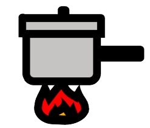

材料（１人分）
- ・もやし（約100g）1/2袋
- ・にんじん1/4本
- ・ごま油小さじ1
- ・しょうゆ小さじ1/2
- ・塩ひとつまみ
- ・いりごま小さじ1
必要な道具
- ・鍋
- ・ざる
- ・ボウル
- ・包丁
- ・まな板
- ・菜箸
注目ポイント
-

ゆですぎ注意 - 水気をしっかり切る
- 味付けは少しずつ
- 少し置くと美味しい
作り方
① にんじんを細切りにします。 できるだけ細く切ると、火が通りやすく、 もやしとなじみやすくなります。

② 鍋にお湯を沸かします。 にんじんを入れて30秒ほどゆでたら、 洗ったもやしを加えます。 さらに1分ほどゆでます。

③ ざるにあげてお湯を切ります。 粗熱が取れたら、手で軽く押さえて 余分な水分を絞ります。 暑くて触れない場合は水で冷やしてもよいですが、 水気はしっかり切りましょう。

③ ざるにあげて湯を切ります。 粗熱が取れたら、 手で軽く押さえて余分な水分を絞ります。 熱い場合は水で冷やしてもOKですが、 水気はしっかり切りましょう。
④ ボウルにもやしとにんじんを入れます。 ごま油、しょうゆ、塩、 いりごまを加えてよく混ぜます。 お好みでにんにくチューブを少し入れてもおいしいです。

⑤ 5分ほど置いて味をなじませます。 お皿に盛り付けて完成です。

調理のコツ
長くゆでるともやしが柔らかくなりすぎて、
水っぽくなります。
1〜2分で取り出すと、
シャキシャキ感が残ります。
味付けの目安
さっぱり食べたいなら
しょうゆは少なめに。
しっかりした味にしたいときは、
しょうゆを少し追加しましょう。
香りを強くしたい場合は、
ごま油を少し増やすのもおすすめです。